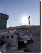
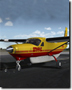

-
Mikonos X preview
At Aerosoft we love Greece. There might be in economic dire straits but the beauty of the islands will never diminish, just as the friendliness of the people. So travel with Aerosoft and 29Palms to Mikonos, land on the small airport to refuel and fly around the island to explore the rugged mountains and coastline. See the typical architecture of the villages with the white houses and blue doors. You can almost smell the ouzo. Check out the preview images and warm up your credit cards for a October release.
-
Sponsoring event: Heraklion X discount this week
 Support the FS Communities, fly together, have fun together - Aerosoft is always open to supporting interesting projects and events in simulation. This week we are setting our focus on the holiday paradise Greece, especially to the VA “Greece Virtual Airways”. In co-operation with VATSIM the VA is holding the “Heraklion Virtual Flight Event” on Sunday, 9.September 2012. As a sponsor of this event we are reducing through Sunday the add-on Heraklion X by 20%. Why don´t you give online flying a try? See you in the air!
- We are approaching Erfurt X!
Erfurt X is now available as a download! The airport of Erfurt-Weimar is the smallest international airport of Germany. It is located in Bindersleben, approx. 6km from the city center of Erfurt. Traffic statistics show 11.000 air movements and 270.000 passengers have passed through terminal A and B. Popular destinations are Mallorca, Djerba, Vilnius and many more. The airport has been recreated to the smallest of details and also includes the village of Bindersleben. AESLite is another feature bringing moving vehicle traffic to the airport. Till now Erfurt X is only available for FSX, FS2004 version will follow.
- Expansion Pack for the Carenado
 There´s an expansion pack for the cargo “C208B Grand Caravan" by Carenado available. Everyone into detail and realism will have a lot of fun with the „ C208B Super Cargomaster HD“ . The aircraft for X-Plane has brilliant graphics and many movable and animated elements. Besides being a cargo transport aircraft it can also offer room for 9-14 passengers.
- My Traffic 2013: A huge package full of surprises
995 new liveries, more than 140 newly developed aircraft series for FSX, up to date flight plans created from real live data and much more. My Traffic 2013 is the latest version of the popular and longtime successful My Traffic series. Uncompromisingly optimized for the FSX, this product provides realistic air traffic in the air and on the ground, which is controlled by artificial intelligence, for more than 8200 airports. The program itself comes along as being very user friendly taking a lot less impact on frame rates as in earlier generations. Owners of the previous version can take advantage of the upgrade service.